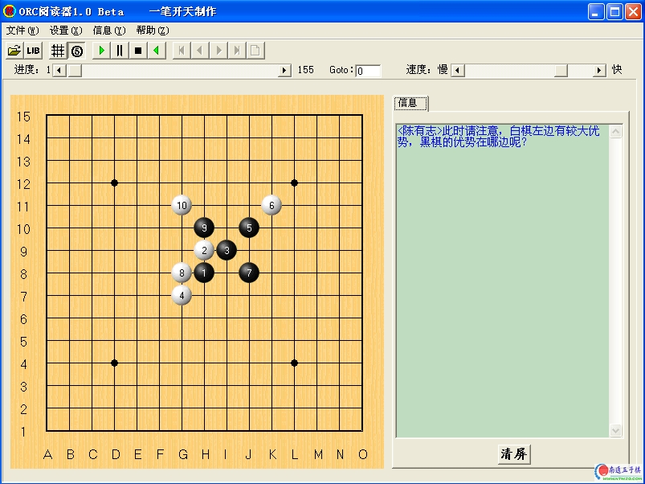

花月讲座一〔有志青年自制〕
首页
五子棋交流
#1 花月讲座一〔有志青年自制〕 作者：有志青年 发表时间：2007-3-28 18:11:57

所需软件请到软件区下载〔此课件提供给小学生阅读，配合老师讲解用的，因此内容还显得稚嫩，望行家里手指点〕
 第一课花月变化.rar
第一课花月变化.rar
#2 Re:花月讲座一〔有志青年自制〕 作者：黄药师 发表时间：2007-3-29 23:15:14
全靠你了，老大！我就捞现成的了！最好出一本书，系统的教学生下五子棋！
#3 Re:花月讲座一〔有志青年自制〕 作者：yidefei 发表时间：2007-3-30 1:21:34
讲得好详细呀，很适合初学者呢
#4 Re:花月讲座一〔有志青年自制〕 作者：有志青年 发表时间：2007-3-30 8:22:10
非常感谢对第一次制作课件的评价，很多想法都是自己脑子里想到就说的，没有职业选手来的精深。
以后的讲稿将继续花月的分析，当然还是面向小学生的。
#5 Re:花月讲座一〔有志青年自制〕 作者：黄药师 发表时间：2007-3-30 18:14:27
其实很多学生都是以花月开局的，估计脑子里都在想着农村包围城市的战略吧！